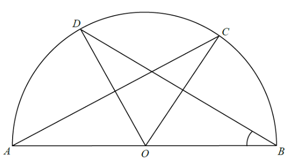

In the figure, O is the centre of the semi-circle ABCD. If AC = BD and ∠COD = 48°, then ∠ABD =
A. 33° B. 31° C. 48° D. 42°

O is the centre and AOB is a diameter. Hence OA = OB = OD = OC = r (radii of the same circle).
Points D and C lie on the semi-circle, and ∠COD = 48° is given.
Equal chords subtend equal arcs (and equal angles) at the centre.
Chord AC ⟷ central angle ∠AOC, and chord BD ⟷ central angle ∠BOD.
Since AC = BD, we have ∠AOC = ∠BOD.
Let ∠AOC = ∠BOD = x.
Around the centre O, the angles along the straight line AB (half-plane) sum to \(180^\circ\):
\[ \angle AOC + \angle COD + \angle DOB = 180^\circ \]
\[ x + 48^\circ + x = 180^\circ \]
\[ 2x = 132^\circ \]
\[ x = 66^\circ \]
So ∠BOD = 66° and ∠AOC = 66°.
We want ∠ABD. This is the angle at the circumference subtended by arc AD.
The central angle subtending the same arc AD is ∠AOD.
\[ \angle AOD = \angle AOC + \angle COD = 66^\circ + 48^\circ = 114^\circ \]
The angle at the centre is twice the angle at the circumference on the same arc:
\[ \angle AOD = 2 \times \angle ABD \]
\[ 114^\circ = 2 \times \angle ABD \]
\[ \angle ABD = 57^\circ \]
OB = OD (radii), so △OBD is isosceles.
\[ \angle OBD = \angle ODB = \frac{180^\circ - 66^\circ}{2} = 57^\circ \]
Since B, O, A are collinear, ∠ABD = ∠OBD = 57°. ✓